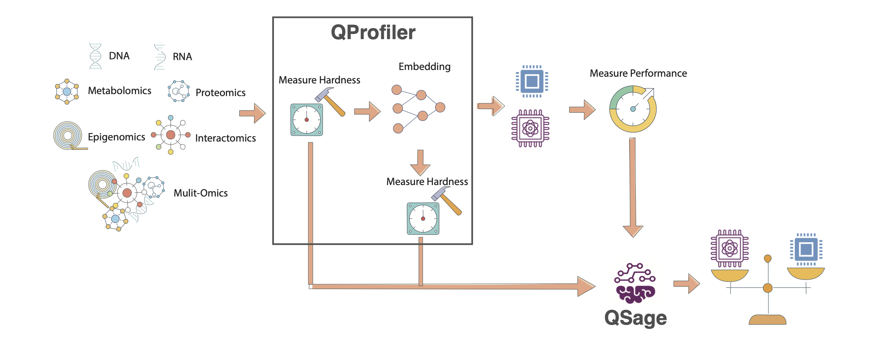

QSage#
Quantum-Inspired Model Selection Advisor
QSage is an intelligent meta-learning system that predicts which machine learning models will perform best on your dataset before you run them. By learning from data complexity patterns across multiple datasets, QSage provides data-driven model recommendations.
- 🎯 What QSage Does
Learns from History: Trains on data complexity metrics and model performance from previous experiments
Predicts Performance: Estimates how well each model will perform on new, unseen datasets
Ranks Models: Provides confidence-weighted rankings of classical and quantum models
Saves Time: Helps you focus computational resources on the most promising models
Important
Key Advantage: QSage uses the same data complexity measures computed by QProfiler to make predictions. This creates a powerful workflow: QProfiler characterizes your data, and QSage recommends the best models based on those characteristics.
Note
Before you start, make sure that you have installed QBioCode correctly by following the Installation guide.
How QSage Works#
QSage implements a meta-learning approach using regression models to predict performance metrics:
{kind=link}

QSage Meta-Learning Pipeline. The system learns from historical QProfiler data (data complexity metrics and model performance) to predict which models will perform best on new datasets. The pipeline consists of training sub-sages for each model and using them to rank models for new data.#
Input: Historical data from QProfiler
Data complexity metrics (23 features)
Model performance (accuracy, F1, AUC)
Multiple datasets and models
Process: Train sub-sages for each model
One predictor per model per metric
Random Forest or MLP regressor
Cross-validated hyperparameter tuning
Input: New dataset complexity metrics
Same 23 features from QProfiler
No model training required
Output: Performance predictions
Predicted accuracy/F1/AUC per model
Confidence scores (R² values)
Ranked model recommendations
The Meta-Learning Pipeline#
Historical Data (QProfiler outputs)
↓
[Data Complexity Features] + [Model Performance]
↓
Train Sub-Sages (one per model)
↓
New Dataset → Extract Complexity → Predict Performance → Rank Models
Data Complexity Features#
QSage uses 23 complexity features extracted by QProfiler. For detailed descriptions of each metric, see the Data Complexity Measures section in the QProfiler documentation.
- Dimensionality (5 features)
Number of features, samples, feature-to-sample ratio
Intrinsic dimension
Fractal dimension
- Statistical Properties (10 features)
Variance (mean, std)
Coefficient of variation (mean, std)
Skewness (mean, std)
Kurtosis (mean, std)
Nonzero entries
Low variance feature count
- Separability (5 features)
Fisher Discriminant Ratio
Total correlations
Mutual information
Mean log kernel density
Isomap reconstruction error
- Matrix Properties (2 features)
Condition number
Entropy (mean, std)
- Information Theory (1 feature)
Entropy
See also
For mathematical formulas, interpretations, and scientific references for each complexity measure, see QProfiler Data Complexity Measures.
Usage#
QSage can be used in two ways: as a command-line tool or as a Python library in your scripts and notebooks.
Command-Line Interface#
After installing QBioCode with the apps extras (pip install qbiocode[apps]), you can run QSage from the command line:
Basic Usage
qsage --input compiled_results.csv --output sage_results/
This trains QSage on historical QProfiler data and generates predictions for all models and metrics.
Command-Line Options
qsage --input DATA.csv --output DIR/ [OPTIONS]
Required Arguments:
--input, -i: Path to input CSV file containing dataset features and model performance metrics--output, -o: Output directory for results and plots
Optional Arguments:
--seed, -s: Random seed for reproducibility (default: 42)--model-type: Type of sub-sage model to train:rf(Random Forest) ormlp(MLP). Default:random_forest. Only one type can be trained per run.--test-size: Proportion of data to use for testing (default: 0.2)
Examples
Train with Random Forest only:
qsage --input qprofiler_results.csv --output results/ --model-type rf
# Or train MLP sub-sages
qsage --input qprofiler_results.csv --output results/ --model-type mlp
Train with custom seed and test size:
qsage --input data.csv --output results/ --seed 123 --test-size 0.3
Train with a custom MLP iteration count:
# Train MLP with more epochs
qsage --input data.csv --output results/ --model-type mlp --n-iter 2000
Output Files
QSage generates:
sage_results.pdf: Visualization plots for all metricssage_summary.csv: Performance summary table with MAE, MSE, RMSE, and R² scores
Integration with QProfiler
QSage is designed to work seamlessly with QProfiler output. The CSV files generated by QProfiler can be used directly as input to QSage:
# Step 1: Run QProfiler to generate training data
qprofiler --config-name=config.yaml
# This produces: compiled_results.csv and compiled_raw_data_evaluations.csv
# Step 2: Train QSage using QProfiler output
qsage --input compiled_results.csv --output sage_results/
The compiled_results.csv file from QProfiler contains:
All data complexity metrics (23 features)
Model performance metrics (accuracy, F1, AUC)
Metadata (dataset names, embeddings, models)
This makes it easy to build a complete workflow:
Profile multiple datasets with QProfiler
Train QSage on the profiling results
Predict performance for new datasets
Tip
Recommended Workflow:
Run QProfiler on 20-30 diverse datasets to build a robust training set for QSage. The more varied your training data, the better QSage’s predictions will be on new datasets.
Individual metric plots:
sage_results_[metric]_barplot.pdfandsage_results_[metric]_scatterplot.pdf
Python Library Usage#
Using QSage#
Quick Start#
from qbiocode import QuantumSage
import pandas as pd
# Load historical data from QProfiler
historical_data = pd.read_csv('qprofiler_results.csv')
# Initialize QSage
sage = QuantumSage(historical_data)
# Train sub-sages for each model
sage.train_sub_sages(test_size=0.2, sage_type='random_forest')
# Predict on new dataset
new_data_complexity = pd.read_csv('new_dataset_complexity.csv')
predictions = sage.predict(new_data_complexity, metric='f1_score')
print(predictions)
Workflow Integration#
QSage works seamlessly with QProfiler to create an end-to-end model selection pipeline.
Step 1: Generate Training Data with QProfiler
# Run QProfiler on multiple datasets
python qprofiler.py --config-name=config.yaml
- This produces:
compiled_results.csv- Model performance metricscompiled_raw_data_evaluations.csv- Data complexity metrics
See QProfiler documentation for configuration details.
Step 2: Train QSage
# Combine QProfiler outputs
data = pd.merge(complexity_metrics, performance_metrics, on='Dataset')
# Initialize and train
sage = QuantumSage(data)
sage.train_sub_sages(sage_type='random_forest')
Step 3: Predict for New Dataset
# Extract complexity from new dataset using QProfiler's evaluate function
from qbiocode import evaluate
new_complexity = evaluate(new_dataset, labels, 'new_data')
# Get predictions
predictions = sage.predict(new_complexity, metric='f1_score')
Configuration Options#
Training Parameters
sage.train_sub_sages(
test_size=0.2, # Train/test split ratio
sage_type='random_forest' # 'random_forest' or 'mlp'
)
Prediction Parameters
predictions = sage.predict(
input_data, # DataFrame with complexity features
metric='f1_score' # 'accuracy', 'f1_score', or 'auc'
)
Available Models
QSage can predict performance for:
Classical: SVC, Decision Tree, Logistic Regression, Naive Bayes, Random Forest, MLP
Quantum: QSVC, VQC, QNN, PQK
Understanding Predictions#
QSage returns a DataFrame with:
model | f1_score | r2 | f1_score*r2
---------|----------|-------|-------------
rf | 0.92 | 0.85 | 0.782
qsvc | 0.88 | 0.78 | 0.686
svc | 0.85 | 0.82 | 0.697
...
- Columns:
model: Model name[metric]: Predicted performancer2: Prediction confidence (R² score from training)[metric]*r2: Confidence-weighted score (used for ranking)
Tip
Interpreting Results:
Higher
[metric]*r2= Better expected performance with higher confidenceHigh
r2(>0.7) = Reliable predictionLow
r2(<0.5) = Uncertain prediction, consider running the model anywayTop-ranked models are your best bets for the new dataset
Tutorial and Examples#
For a complete walkthrough with visualizations and analysis, see the interactive tutorial:
- The tutorial covers:
Loading and preparing QProfiler data
Training QSage with different configurations
Making predictions and interpreting results
Visualizing prediction accuracy
Comparing predicted vs actual performance
Best Practices#
Training Data Quality
Use diverse datasets (different sizes, complexities, domains)
Include at least 20-30 datasets for robust training
Ensure QProfiler was run with consistent settings
Include both classical and quantum model results
Model Selection
Random Forest (default): Better for non-linear relationships, more robust
MLP: Can capture complex patterns, requires more data
Prediction Confidence
Trust predictions with R² > 0.7
Be cautious with R² < 0.5
Consider running top 3-5 models even if predictions vary
Iterative Improvement
Add new datasets to training data over time
Retrain QSage periodically with updated results
Track prediction accuracy to validate QSage performance
Limitations and Considerations#
Warning
Important Limitations:
QSage predictions are only as good as the training data
Performance on datasets very different from training data may be unreliable
Quantum model predictions require quantum model training data
Does not account for model-specific hyperparameter tuning
When to Use QSage:
✅ You have historical QProfiler results from multiple datasets ✅ You want to prioritize which models to try first ✅ Computational resources are limited ✅ You need quick model selection guidance
When to Run All Models:
❌ First time analyzing a new data domain ❌ Dataset characteristics are very different from training data ❌ You have sufficient computational resources ❌ You need definitive performance comparisons
Technical Details#
Sub-Sage Architecture
For each model \(M\) and metric \(m\):
- where:
\(\mathbf{x}_{\text{complexity}}\) = 23-dimensional complexity feature vector
\(f_{\theta}\) = Random Forest or MLP regressor
\(\hat{y}_{M,m}\) = Predicted performance metric
Confidence-Weighted Ranking
Models are ranked by:
where \(R^2_M\) is the prediction confidence from cross-validation.
Feature Importance
QSage can reveal which complexity features are most predictive of model performance, helping understand why certain models work better on specific data types.
Reference
For implementation details, see apps/sage/sage.py in the QBioCode repository.